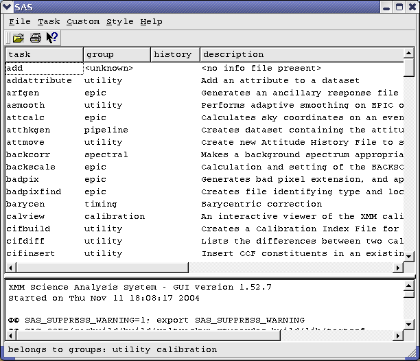

XMM-Newton Science Analysis System
sas (gui-1.52.10) [xmmsas_20170112_1337-16.0.0]
Overview of main screen elements
After starting the SAS GUI you will see the components of the SAS GUI interface on screen. The interface consists of a menu, a tool bar, a task browser, a log browser and a status bar. Your view may be similar to the one shown here:

Subsections
XMM-Newton SOC/SSC -- 2017-01-12